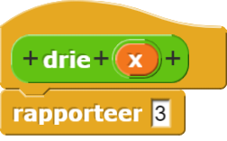
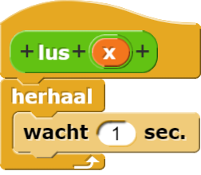
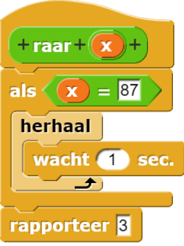
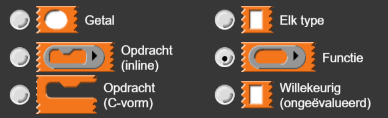
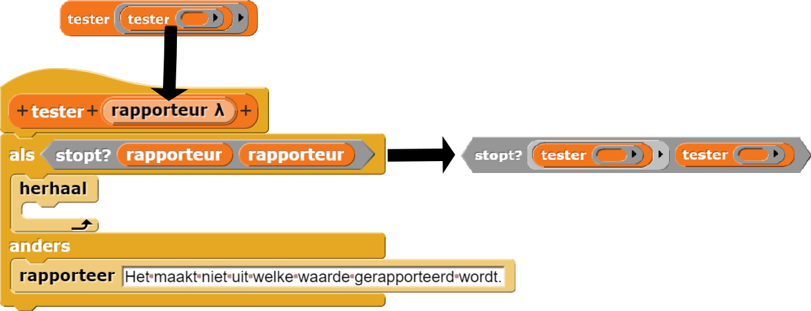

Een onbeslisbaar probleem
Op deze pagina, ga je een probleem bekijken dat geen antwoord kan hebben.
Op dit punt in de cursus heb je de frustratie ervaren van het debuggen van een programma. Het zou geweldig zijn als er een algemeen foutopsporingsprogramma was dat code kon lezen en daarna bepalen of er bugs in zitten. Helaas kunnen we een bewijs uit het ongerijmde gebruiken (zoals Alex, Bo en Yasmine op de vorige pagina deden) om te bewijzen dat dit niet kan.
Eerst gaan we ervan uit dat het mogelijk is om een functie te schrijven die bepaalt of er oneindige lussen in een programma zitten (situaties waarin een functie voor altijd wordt uitgevoerd zonder een waarde te rapporteren). Vervolgens zullen we die functie gebruiken in een programma dat speciaal is ontworpen om een tegenstrijdigheid te creëren om te bewijzen dat de aanname onjuist is: er kan geen programma voor algemene foutopsporing bestaan . "Heeft dit programma fouten" is een onbeslisbaar probleem ; er kan nooit een algoritme worden gebouwd dat deze vraag voor elk programma beantwoordt.
Een oneindige lus is een rij computerinstructies die zichzelf voor altijd blijft herhalen.
Een onoplosbaar probleem is een probleem waarvoor geen enkel algoritme geschreven kan worden om de oplossing te vinden.
Een onbeslisbaar probleem is er een waarvoor geen algoritme kan worden geschreven dat altijd een juiste waar/onwaar-beslissing geeft voor elke invoerwaarde. Onbeslisbare problemen zijn een subcategorie van onoplosbare problemen dat alleen problemen bevat die een ja/nee-antwoord zouden moeten hebben (zoals: bevat mijn code een bug?).
Aannemen dat een stopt?-functie bestaat
De aanname maken
stopt? niet weergeven; we bewijzen dat het helemaal niet kan worden
geschreven, ongeacht hoe het geïmplementeerd wordt.
stopt? die bepaalt
of een bepaalde rapporteur een waarde in een eindige hoeveelheid tijd rapporteert. (Als dat zo is, zeggen we
dat de rapporteur stopt. ) Er zijn twee invoeren nodig: een functie en een invoerwaarde voor die
functie. Het rapporteert waar als de functie een waarde zou rapporteren wanneer die invoer
wordt gegeven; het rapporteert niet waar als de functie voor altijd zou worden uitgevoerd (in
een oneindige lus).
De functie afgerond bijvoorbeeld wordt niet voor altijd uitgevoerd met de invoer
7.5; het zal 8 rapporteren.
stopt? de
invoerfunctie als data ziet in plaats van het uit te voeren.
omdat een waarde rapporteert.
Stel je anderzijds voor dat we een programma hebben dat in een oneindige lus komt te zitten met de invoer foo; dit programma zal nooit stoppen en dus nooit iets rapporteren.
omdat zich oneindig herhaalt.
Het plan voor het bewijs bekijken
We zullen bewijs uit het ongerijmde gebruiken om te laten zien dat de volgende vraag niet beantwoord kan worden in het algemeen:
Zal een bepaald computerprogramma, met een bepaalde invoer, een resultaat rapporteren in een eindige hoeveelheid tijd?
Het "computerprogramma" is de eerste invoer voor stopt?.
De 'gegeven invoer' is de tweede invoer. stopt? rapporteert oftwel
waar oftewel onwaar: het computerprogramma zal stoppen of het zal niet
stoppen.
Merk op dat stopt? zelf altijd een resultaat moet rapporteren, zelfs als het
programma dat het test dat niet doet. Dit is zo omdat we aannemen (waarvan we gaan laten zien
dat het niet klopt) dat stopt? altijd werkt, dat het altijd een antwoord rapporteert.
We kunnen deze vraag beantwoorden voor specifieke functies, maar we willen bepalen of we een algemene test kunnen maken die ons vertelt of een bepaalde functie een waarde rapporteert voor een specifieke invoer.
Het deel "in het algemeen" is belangrijk. Natuurlijk kunnen we de vraag beantwoorden voor
bepaalde programma's. Deze stopt voor elke invoer:

Deze stopt voor geen enkele invoer:

Deze stopt soms, voor elke invoer behalve 87:

Herinner je dat de vraag is of we een test kunnen maken die ons zegt of elke functie een waarde rapporteert voor elke invoer.
-

- Beschrijf het proces van een bewijs uit het ongerijmde.
- Beschrijf wat de
stopt?functie doet. - Beschrijf hoe je de
stopt?functie in dit bewijs gaat gebruiken.
Laten zien hoe dit een tegenstrijdigheid creëert
Een programma maken waarvoor stopt? niet werkt
Om te bewijzen dat een dergelijke functie niet kan bestaan, moeten we een tegenstrijdigheid creëren. We
moeten aantonen dat er ten minste één functie en één invoer voor die functie moet zijn waarvoor
stopt? niet werkt zoals we dachten dat het werkt. Dus we kunnen een blok, tester
maken, specifiek om stopt? te breken:
# en ⋮ symbolen zijn voor invoeren als getallen of
lijsten, is λ niet deel van de naam van de invoer maar een
type-hint die gemaakt wordt wanneer het rapporteur invoertype wordt
geselecteerd:

Herinner je dat dat een invoertype selecteren het uiterlijk van het invoervak aanpast zodat het het aangeeft welke invoer er verwacht wordt. Het invoervak voor
tester zal een afgeronde grijze
ring hebben om aan te geven dat de invoer een rapporteur moet zijn:

Het herhaalblok in dit script zorgt voor een oneindige lus. Als de
testercode in dit deel van het alsblok komt, dan zal het nooit iets rapporteren.
Dus of tester zichzelf zal stoppen hangt af van de uitkomst van het
stopt?predikaat in het alsblok.
Het blok vraagt wat er gebeurt als we de ingevoerde functie (rapporteur) aanroepen met zichzelf als invoer. Dit is vergelijkbaar met toen Bo een zin maakte over de zin die ze aan het maken was met de zin "De zin die ik nu zeg is onjuist."
stopt?functie die aangeroepen wordt in tester niet kan bestaan.
Zelf-verwijzing gebruiken om een tegenstrijdigheid te maken
Om precies de situatie te creëren die Bo uitlegde ("De zin die ik nu zeg is onjuist."),
gaan we tester aanroepen over zichzelf:

Het als blok in het
testerblok zal nu vragen of tester zal stoppen (niet voor altijd doorgaan) als het
aangeroepen wordt met tester als invoer. Het predikaat in het alsblok zal
stopt? (tester) (tester) zijn.

Dus net als in de voorbeelden hierboven,
zou betekenen dat
een waarde geeft.
zou betekenen dat
voor eeuwig blijft
herhalen.
De Tegenstrijdigheid Begrijpen
Wanneer we
aanroepen, zien we een
tegenstrijdigheid. Om te zien hoe, kijken we naar de definitie van tester:
Om te laten zien dat het resultaat fout moet zijn voeren we een gevalanalyse uit net zoals we deden op pagina 1. Kijk naar de twee mogelijke gevallen:
- Als
dan zal
testerde eerste aanpak van dealsnemen en dus voor altijd herhalen. Dat betekent dat
niet zal stoppen en dus geeft stopt?het foute antwoord. - Als
dan zal
testerdeelseaanpak nemen en "Het maakt niet uit welke waarde gerapporteerd wordt." rapporteren. Wat betekent dat
wel zal stoppen en dus heeft stopt?het weer fout.
tester rapporteert, alleen
maar dat het een waarde rapporteert, maar het maakt wel uit welke waarde stopt?
rapporteert.
Bij alles wat stopt? rapporteert zal het nooit overeenkomen met zichzelf bij een programma
zoals dit. Deze tegenstrijdigheid (deze logische onmogelijkheid) betekent dat de aanname dat het
mogelijk is stopt? te maken, fout is. . Dit is niet alleen een claim over wat
er zou gebeuren in Snap !. De taal die je gebruikt om een computerprobleem te onderzoeken, kan
de duidelijkheid of leesbaarheid van je code beïnvloeden, maar niet of er een oplossing voor een
probleem bestaat. Zelfs met de vooruitgang in kwantumcomputers, zullen we nooit in staat zijn om een
programma voor algemene foutopsporing te maken. Dit beroemde voorbeeld staat bekend als het
stopprobleem, en het feit dat het stopprobleem onbeslisbaar is, is de Halting Theorem
(Stopstelling).
-
Neem dit hele bewijs opnieuw samen door. Zorg ervoor dat jij en je partner het volgende
begrijpen:
- Alles uit opdracht 1 over bewijs door tegenstrijdigheid, wat
stopt?doet en hoestopt?wordt gebruikt in het bewijs. - De basisprincipes van hoe de functie
testerzich gedraagt (voor elke functie die wordt ingevoerd). - Hoe het aanroepen van
leidt
tot
een tegenstrijdigheid.
- Wat die tegenstrijdigheid betekent in het bewijs.
- Of het stopprobleem een onoplosbaar probleem is, een onbeslisbaar probleem, of beide; en why.
- Alles uit opdracht 1 over bewijs door tegenstrijdigheid, wat
- Schrijf een paragraaf waarin het verschil wordt uitgelegd tussen een probleem dat niet kan worden opgelost (zoals het stopprobleem) en een probleem dat ongelooflijk veel tijd kost.
Wie bewees voor het eerst de Halting Theorem (Stopstellling)?
Alan Turing (1912-1954) was een van de grondleggers van de informatica. Hij staat bekend om twee prestaties. Ten eerste heeft hij een enorme bijdrage geleverd aan het winnen van de Tweede Wereldoorlog door een wiskundige theorie en bijbehorende machine uit te vinden om de gecodeerde berichten van de Duitse Enigma-machine te breken. Ten tweede was Turing samen met zijn collega Alonzo Church een oprichter van theoretische informatica : bewijzen hoe computers moeten werken ongeacht de toekomstige technologie. Door zijn werk aan het stopprobleem, bewees hij dat er berekeningen zijn die nooit gedaan kunnen worden , ongeacht hoe groot en snel de computer is.
Toen Turing dit werk deed, waren er geen programmeerbare computers; mensen moesten fysieke machines
opnieuw bedraden om elk nieuw probleem op te lossen. Met krachtige programmeertalen (zoals Snap !
) kunnen we de essentie van het bewijs van Turing veel gemakkelijker zien en begrijpen omdat we
functies kunnen gebruiken als invoer voor andere functies, zoals je hebt gezien met map ,
houd en combine . Dit bewijs was nog moeilijker voor Turing omdat hij het
idee moest uitvinden van een computerprogramma dat kan worden weergegeven als gegevens in de computer.